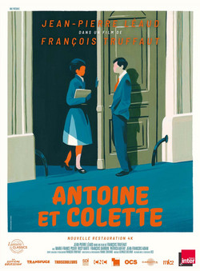

François Truffaut
1962
32 minutes
This is a shortish film by Truffaut that is the second of five films he did telling the story of Antoine Doinel. This uses the same child actor as he used in The 400 Blows, who grew up to be grown-up actor Jean-Pierre Léaud. This is JPL in the awkward years, no longer a scrawny kid, but not yet a scrawny adult. It is delightfully cringey with even more of a hint of autobiographical Truffaut adolescence hinted at in the story. This time you get to watch this unfortunate former idiot kid sent to juvie fail painfully with a girl, despite his best efforts to ingratiate himself with her family.
This film is short and fairly low-stakes and it's just the right mix of pathetic and funny to succeed at being a little touching. Léaud was quite literally born to play roles like this. He's not obnoxious enough to hate or even dislike, but seeing him try too hard or in the wrong ways or succumb to the wrong temptations is more realistically heart-breaking than to see it happen to people whose characters don't deserve their consequences at all. You can't help but want the little creep to succeed at something and maybe dodge a few more consequences than he's always dodging, but most of his journey through the Doinel films feels like he's earning his Aesop lessons.
You wonder how your father's life might have been different if he'd paid more attention and watched these films as a kid. Your dad wasn't a bad guy and he was certainly a lot luckier and had a better head on his shoulders than Antoine Doinel, but he was also prone to a lot of the same weaknesses. He mostly grew out of it and ended up a family man with two loving children, but a little fore-wisdom could probably have saved him a lot of heartache and embarrassment. Every Doinel film has you horrified at how cringily awful things can go followed by a lot of self-inflicted consequences by blissfully ignoring problems as they pile up, falling to foolish temptations, or doing the worst thing possible in response to the actual crises.
Time to choose something different: